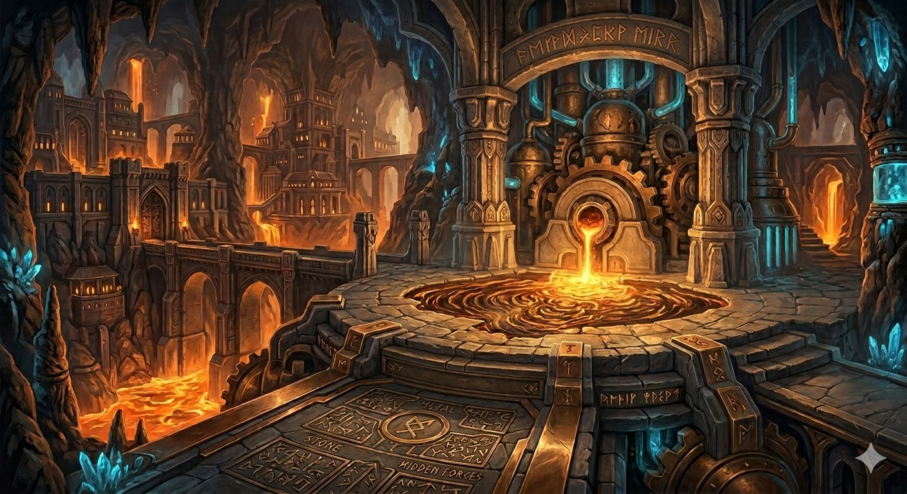
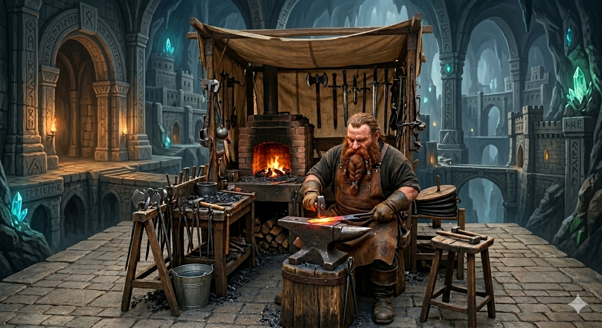
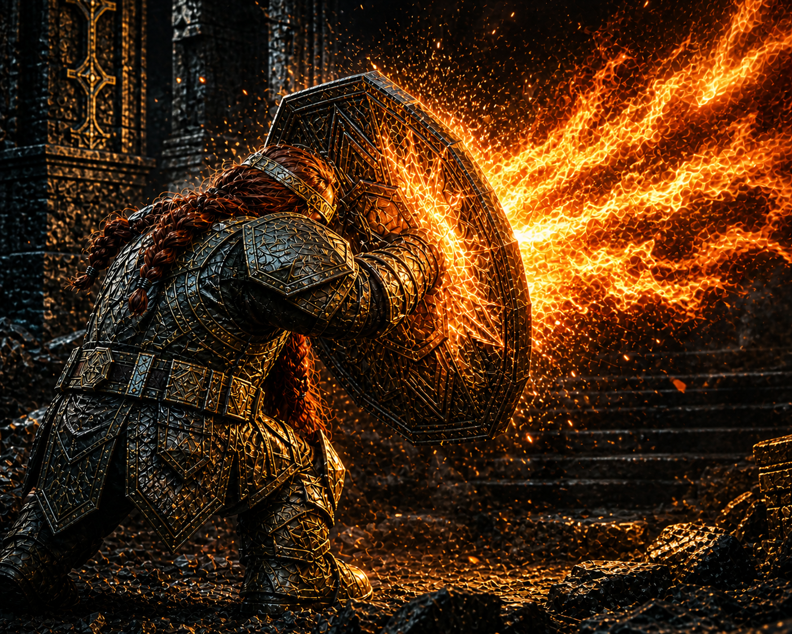
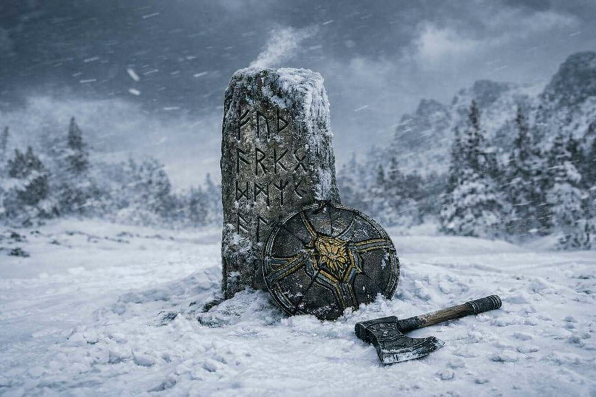
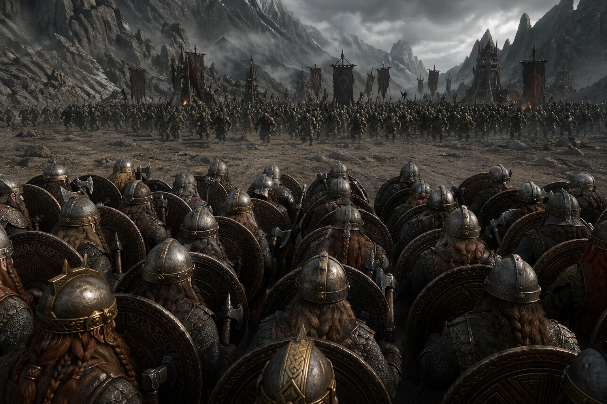
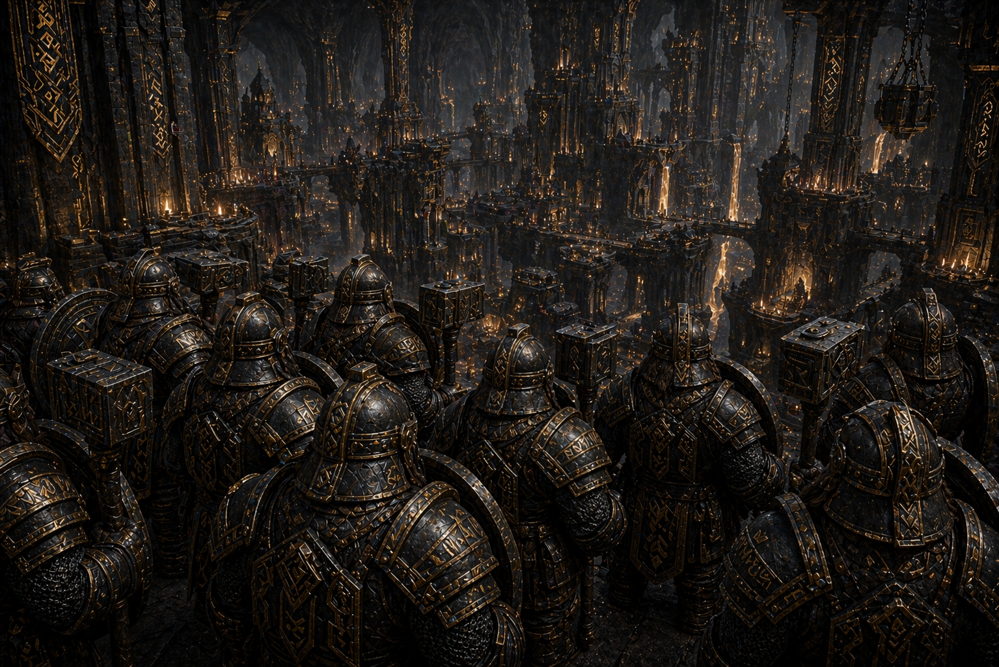
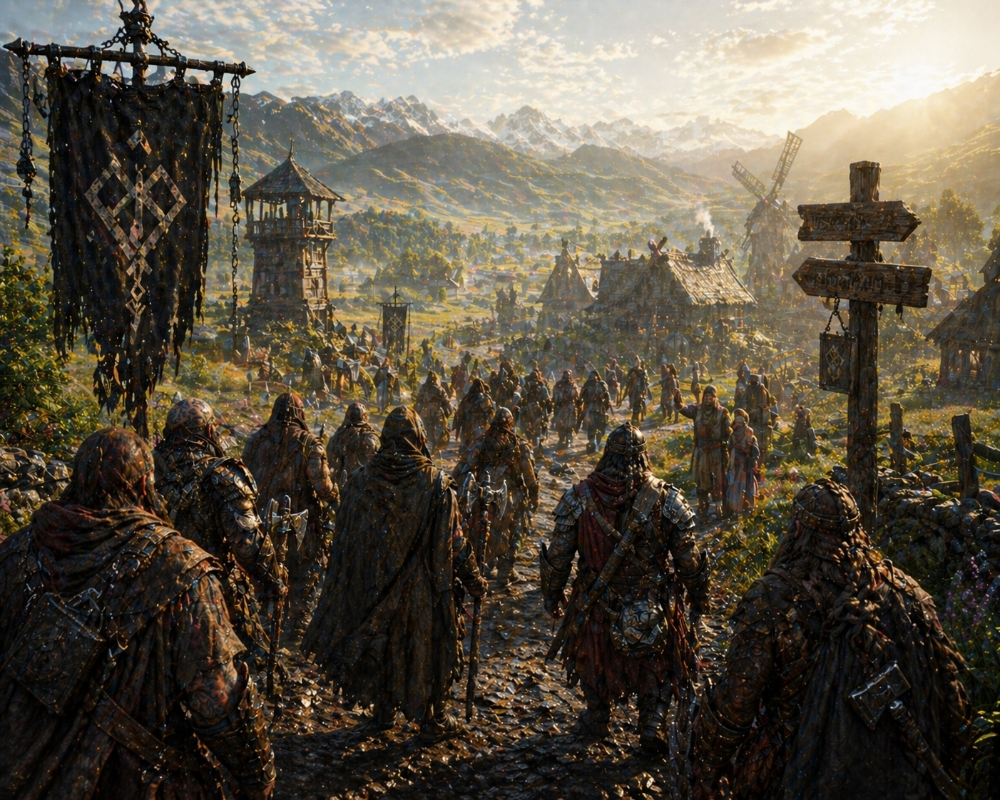
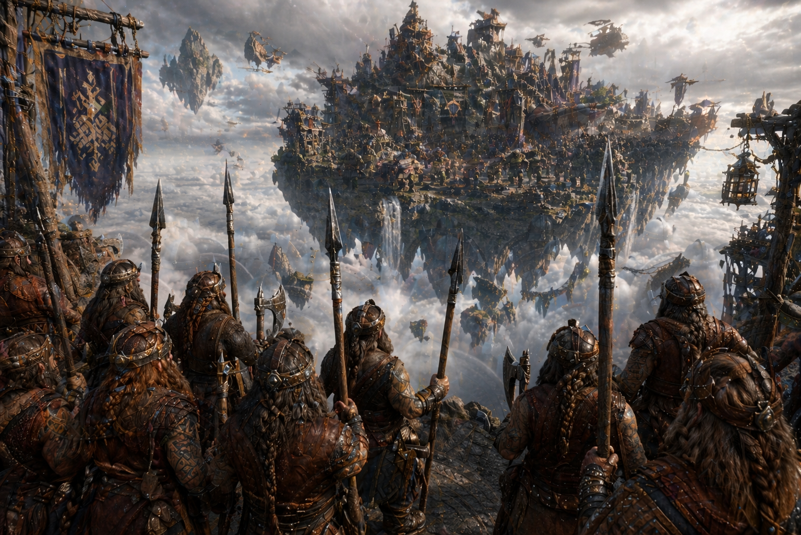

You have chosen Dwarves

Origin
While elves were the first to inhabit Eldora and humans arrived through migration, dwarves were brought into existence through deliberate creation—shaped with purpose in the world’s earliest age. Their first civilization, known collectively as the Aurumdeep, spread across a vast network of subterranean strongholds, where they mastered stone, metal, and the hidden forces beneath the world. United by craft, discipline, and an unrelenting drive to uncover what lay beyond reach, they became one of the most formidable civilizations in Eldora’s early history.
That unity was broken during the Great Delving, when their pursuit of deeper truths led them to a sealed prison far below. What they uncovered—ancient, imprisoned entities—triggered a catastrophic collapse that shattered their network and scattered their kind. Though their paths would diverge in the aftermath, all dwarves trace their origin to that single act—when creation met consequence, and their fate was forever reforged.

Culture and Way of Life
Elven society is shaped by continuity, balance, and a deep awareness of time. Where other races build quickly and expand relentlessly, elves cultivate and refine, allowing their settlements to grow in harmony with their surroundings. Cities are not imposed upon the land but woven into it—forests become homes, rivers become pathways, and ancient sites are preserved rather than replaced. Their culture values patience, mastery, and understanding, with individuals often dedicating decades, even centuries, to perfecting a single craft or discipline.
Despite their shared origin, elven culture is not uniform. Different lineages develop distinct traditions based on the aspect of Eldora they are bound to—some live in quiet communion with nature, others pursue arcane knowledge, while a few act as guardians of sacred places and ancient truths. What unites them is a common perspective: life is not a race to be won, but a balance to be maintained. This long view grants them wisdom, but also distance—elves can appear detached or slow to act, especially when faced with the urgency and ambition of younger races.

Strengths and Weaknesses
Dwarves are defined by their endurance—both physical and mental. They possess remarkable resilience, capable of withstanding harsh conditions, long labor, and sustained conflict without faltering. Their disciplined mindset allows them to approach problems with patience and precision, making them exceptional craftsmen, strategists, and defenders. Once committed, a dwarf sees things through to completion, no matter the cost.
However, this same steadfast nature can become a limitation. Dwarves often struggle with rapid change, preferring stability over uncertainty. They may be slow to trust unfamiliar ideas or adapt to chaotic situations, especially when those situations defy structure or logic. Their deep attachment to purpose can also weigh heavily on them—when that purpose is lost or challenged, it can leave them unmoored and difficult to redirect.

Beliefs
Dwarves believe that existence itself is an act of forging—of shaping oneself and the world through effort, discipline, and intention. They do not rely on divine favor to define their worth; instead, they measure it by what they build, preserve, and endure. Every action leaves a mark, and it is through these marks that a dwarf’s legacy is formed.
The memory of the Great Delving remains a defining undercurrent in their beliefs. For some, it stands as a warning—that not all things are meant to be uncovered. For others, it is a lesson in consequence, not restraint. Yet across all interpretations, one truth persists: what is broken may be reforged, but never without cost.

Battle Style
Dwarves approach combat with discipline, control, and intent. They favor structured engagements, using terrain, positioning, and preparation to their advantage. Rather than relying on speed or aggression alone, they endure—holding ground, absorbing pressure, and dismantling their opponents with calculated precision. Every movement is deliberate, and every strike serves a purpose.
They excel in prolonged engagements, where patience and resilience can outlast brute force. Whether advancing methodically or holding a defensive line, dwarves treat battle as an extension of their craft—something to be shaped, controlled, and ultimately mastered. Even in unfamiliar situations, they adapt by imposing structure onto chaos, turning the battlefield into something they can understand and overcome.
What Path Did Your People Take After the Fall?



Each path is a legacy forged in the wake of ruin—shaping how you endure, rise, or move through the world.
Legacy of the Forge